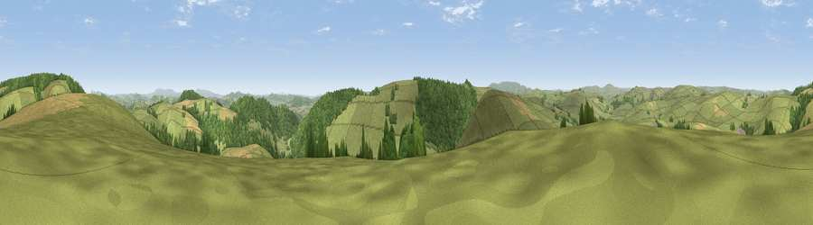

Viewpoint near Chapel Lawn
#6488 in England · top 20% of its area beats it · near Chapel LawnThe view, rendered

A 360° render of this exact spot computed from the terrain model, tree cover and land cover — summer colours, afternoon light, calibrated against photographs of famous viewpoints. Real trees, hedges and buildings will differ in detail.
The panorama
Grey silhouette: terrain skyline in each direction (720 bearings, Earth curvature and refraction included). Dashed green: skyline with trees (+15 m) and buildings (+8 m) as obstacles. Blue strip: how far the ground is visible on each bearing.
Where the view opens
Wedge length = distance to the farthest visible ground on that bearing (vegetation-aware). Rings at 10, 25 and 50 km.
What fills the view
65% grassland · 26% woodland · 9% cropland
Angular shares of the visible panorama (visual magnitude), not map area. Landscape diversity 0.37 (0–1 Shannon).
Key numbers
More beautiful places nearby
The staircase of upgrades: each row has a higher view potential than everything closer. Driving times are estimates from straight-line distance, calibrated against real road routing — check an actual route before setting out.
| Place | Direction | Drive | Score |
|---|---|---|---|
| Viewpoint near Stowe | S · 2 km | ~6 min | 74.4 |
| Viewpoint near Hopton Castle | E · 4 km | ~9 min | 79.3 |
| Viewpoint near Asterton | NNE · 14 km | ~25 min | 83.0 |
| The Lawley | NE · 27 km | ~43 min | 85.8 |
| Viewpoint near Little Wenlock | NE · 44 km | ~64 min | 86.6 |
| North Hill | ESE · 54 km | ~76 min | 86.8 |
| Worcestershire Beacon | SE · 55 km | ~77 min | 87.1 |
| Viewpoint near Bossington | SSW · 134 km | ~158 min | 88.3 |
52.38564, -3.00311 · source: screening · position refined by local search. Computed location — check access rights before visiting.